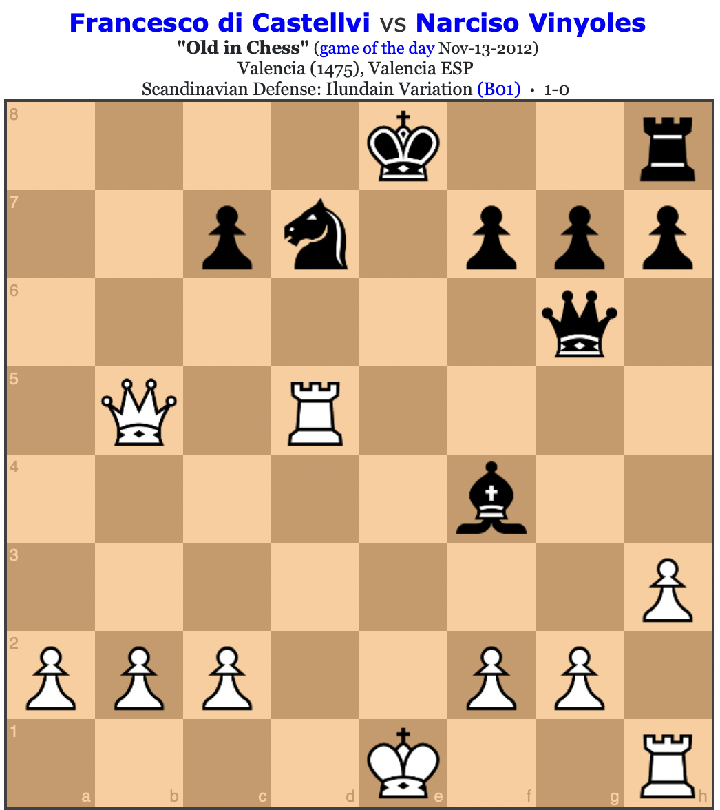
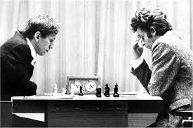
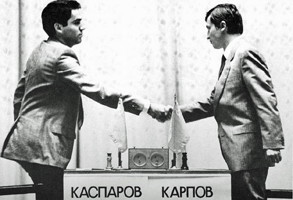
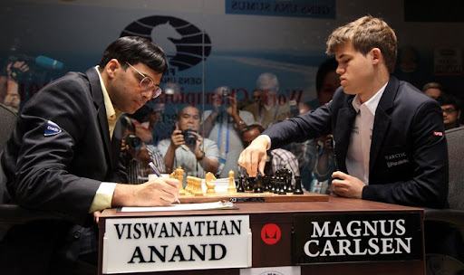
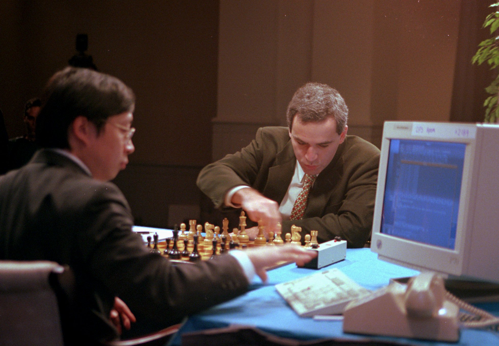

A Brief History of Chess
Chess is one of the oldest and most strategic board games in the world, with origins tracing back to the 6th century in India. Known as Chaturanga, it evolved as it spread to Persia, becoming Shatranj, and later reached Europe, where it underwent significant changes to form the modern game we recognize today. Over the centuries, chess has captivated minds with its complexity and has been a battlefield for countless legendary players. The game has not only been a source of entertainment but also a tool for developing critical thinking and strategic planning.
Important Games in Chess History
- The First Recorded Chess Game: The earliest known recorded chess game took place in 1495 in Italy, played by the Italian nobleman Pietro Carrera. This game demonstrated fundamental strategies that would influence future play. 
- Bobby Fischer vs. Boris Spassky (1972): This World Championship match in Reykjavik is legendary not only for its high stakes but also for its Cold War backdrop. Fischer’s victory marked a significant moment in chess history, as he became the first American world champion, breaking the Soviet Union's dominance in the sport. 
- Garry Kasparov vs. Anatoly Karpov (1985): The rivalry between Kasparov and Karpov is one of the most famous in chess. Their 1985 match culminated in Kasparov's victory, making him the youngest world champion at the age of 22 and solidifying his status as one of the greatest players in history. 
- Magnus Carlsen vs. Viswanathan Anand (2013): In their World Championship match, Carlsen defeated Anand to become the World Chess Champion at just 22 years old. This victory signaled a new era in chess, as Carlsen's innovative style and deep understanding of the game set new benchmarks for excellence. 
- Garry Kasparov vs. Deep Blue (1997): This landmark match against the IBM supercomputer Deep Blue was significant as it marked the first time a computer defeated a reigning world champion in a match under standard chess tournament time controls. The event sparked discussions about the future of artificial intelligence in chess and beyond. 